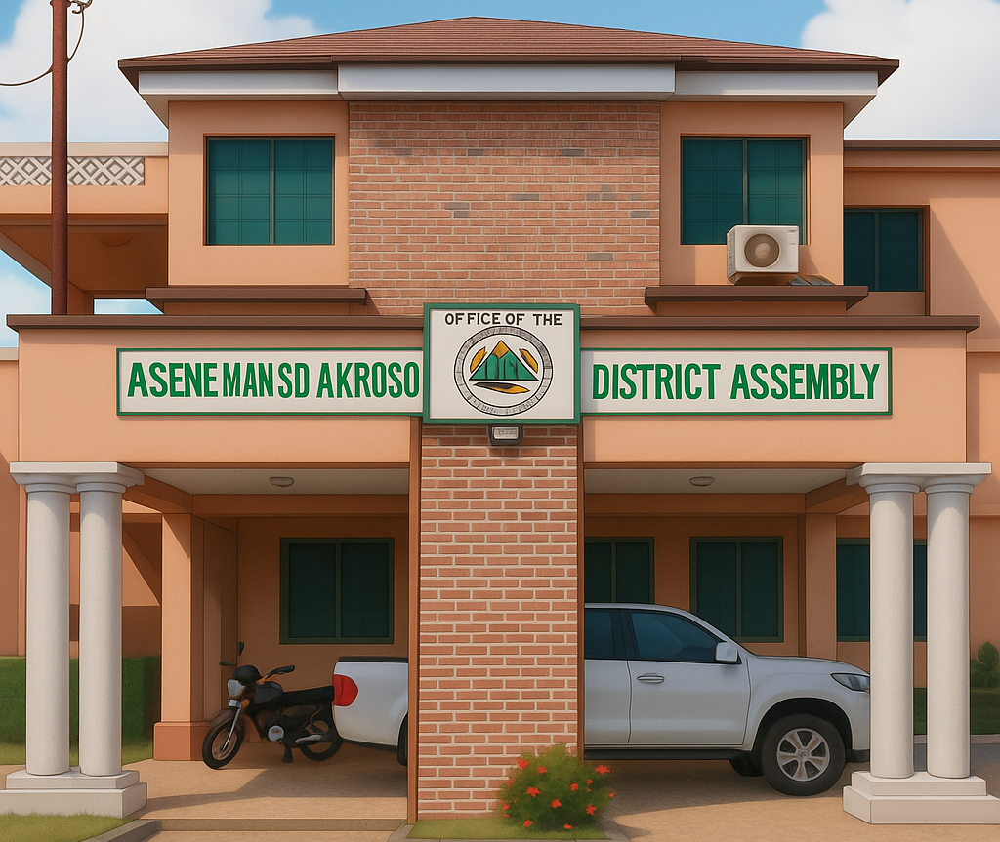

The Asene Manso Akroso District Assembly was carved out of the Birim Central Municipal Assembly with its administrative capital at Akyem Manso by a Legislative Instrument (L.I 2341) and inaugurated in March, 2018.
To promote inclusive development, empower our residents and protect our natural environment. We aim to achieve this by fostering collaboration and supporting local businesses.
To become a thriving and sustainable community that preserves our cultural heritage, fosters economic growth and ensures a high quality of life for all residents of the Asene Manso Akroso District.
To work in partnership with all stakeholders through effective local government administration to ensure efficient and sustainable service delivery.
Integrity, diligence, creativity, client-focus, discipline, participation, innovativeness, equity, transparency & accountability, and responsibility to the general public.
The District is bordered to the north by Birim Central Municipal, to the south by Agona East District, to the east by Denkyembour District, and to the west by Akim Oda Municipal and Achiase District.
The District covers an estimated total land area of 471.82 km² with about 55 communities including hamlets within its jurisdiction.
The official population figure from the Ghana Statistical Service (2021 PHC) is 77,498, with males constituting 48.8% and females 51.2%. With a growth rate of 2.4%, the projected population for 2026 is 81,950.
Population distribution across communities in the Asene Manso Akroso District, Eastern Region.